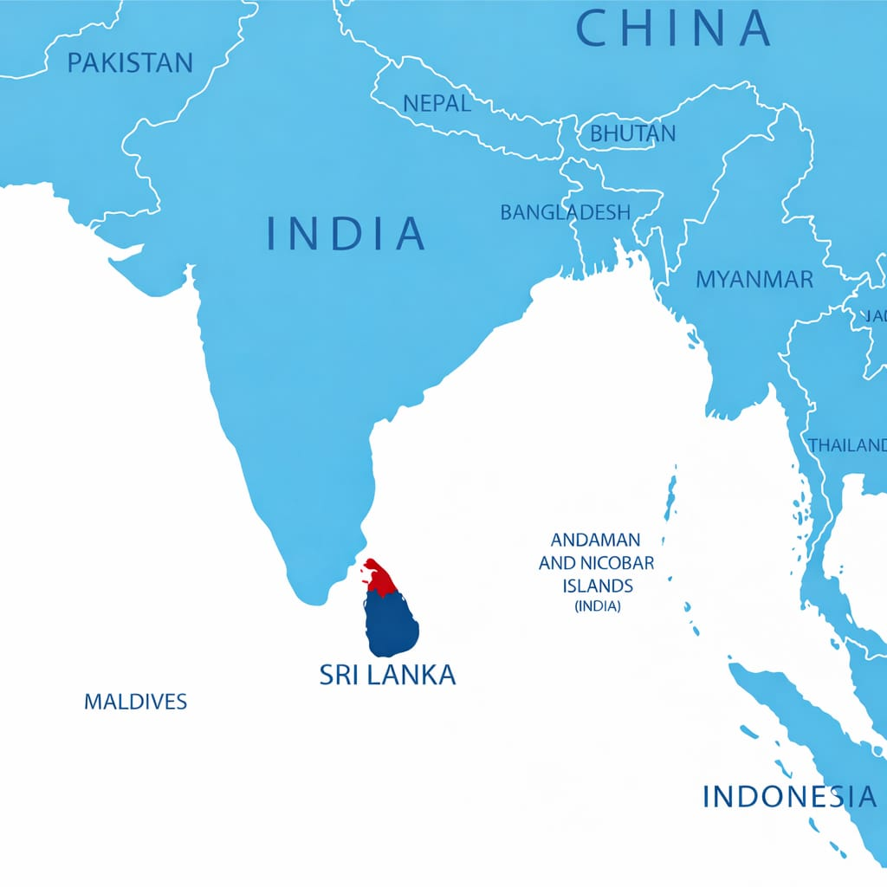

Discover unparalleled investment opportunities, connect with key stakeholders, and drive sustainable economic growth through the OSSI investment platform.
A culturally rich and historically significant region, known for its vibrant communities, pristine coastline, and emerging economic potential. Positioned as a key growth center for strategic investments in agriculture, tourism, ICT, and renewable energy sectors.
Strategic geographic location with access to regional markets
Abundant natural resources and skilled workforce
Government incentives and investment-friendly policies

Your Centralized Gateway to Investing in Northern Sri Lanka. Navigate investment opportunities with ease through our
One-Stop Shop for Investment (OSSI) platform.
Single point of contact for all investment inquiries, permits, and approvals
Connect with government agencies, local authorities, and industry partners
Access district-wise investment proposals and ready-to-invest projects
Access comprehensive information on agriculture, renewable energy, tourism, technology, and more across all 5 districts.
Step-by-step guidance through legal frameworks, incentive programs, and regulatory requirements.
Network with government agencies, local authorities, diaspora networks, and private sector partners.
Building investor confidence through transparency and efficiency
Positions Northern Province as a structured, transparent, and forward-thinking investment destination.
Reduces time and complexity by providing a single point of contact for all investment processes.
Makes investment opportunities easily accessible to global investors, diaspora, and local entrepreneurs.
OSSI connects you directly to projects, policies, and partners across the Northern Province. Whether you're exploring sectors, seeking permits, or networking with stakeholders—OSSI is your first and only stop.
Each district offers unique investment opportunities and strategic advantages
Discover why Northern Sri Lanka is emerging as one of South Asia’s most promising and strategic investment destinations.
Comprehensive sectoral framework for sustainable development in Northern Sri Lanka
Modern agricultural practices, agro-processing, fisheries development, and livestock farming.
Industrial development, trade facilitation, export promotion, and tourism infrastructure.
Comprehensive infrastructure development including energy, water, transport, and urban planning.
Balanced regional development focusing on both urban centers and rural communities.
Developing human capital through education, healthcare, skills training, and youth empowerment.
Sustainable environmental management, conservation, and disaster risk reduction.
Inclusive social protection systems and empowerment of vulnerable groups.
Digital transformation, technological innovation, and research & development.
Efficient governance systems, legal frameworks, and public administration.
Northern Province, Sri Lanka. Official investment and proposal management portal operated under the Northern Province.
Everything you need to know about investing in Northern Sri Lanka